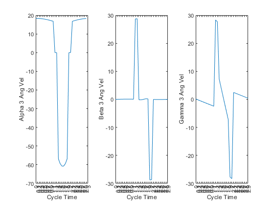

Contents
Kyle Mitchell
RBE 521 Final Exam
close all; clear all; clc; % Booleans to toggle plotting plot_6_step_pos_and_vel = true; % Needs to be true for part 6 plot_11_step_pos_and_vel = true; plot_transfer_a_b_g = true; plot_cycle_pos = true; plot_cycle_a_b_g = true; % Needs to be true for part 7 plot_cycle_joint_velocities = true; % Needs to be true for part 8 plot_simulation = true; % Needs to be true for part 9
Problem 1
% From HW 6 and problem statement: v = 0.01; % m/s duty = 4/6; L = 0.030; % m leg_lengths = [0, 0.050, 0.100]; % m liftoff_height = 0.005; % m body_height = 0.1; % m body_l = 0.4; % m body_w = 0.2; % m body_h = 0.1; % m D = leg_lengths(1) + leg_lengths(2) + (body_w/2); % Q1 u_fb = duty / (1 - duty) * v; % m/s % Q2 u_fg = v / (1 - duty); % m/s % Q3 num_contact_legs = 4; % Q4 phi_start = [4/6, 1/6, 2/6, 5/6, 0/6, 3/6]; % start of transfer phase phi_end = [0/6, 3/6, 4/6, 1/6, 2/6, 5/6]; % end of transfer phase % Q5 T = L / v; % sec
Q6
T_s = T * duty; % support time (sec) T_t = T - T_s; % transfer time (sec) % Define time steps and initialize generic x and z position vectors t_steps = [0, (1 * T_t)/5, (2 * T_t)/5, (3 * T_t)/5, (4 * T_t)/5, T_t]; interval = 0.2; x_pos_generic = zeros(1,size(t_steps,2)); z_pos_generic = zeros(1,size(t_steps,2)); % Calculate generic x and z positions of leg in transfer wrt ground for i=1:size(t_steps,2) if i == 1 % if liftoff start time x_pos_generic(i) = 0; z_pos_generic(i) = 0; elseif i == 2 % if liftoff end time x_pos_generic(i) = 0; z_pos_generic(i) = liftoff_height; elseif i == (size(t_steps,2) - 1) % if touchdown start time x_pos_generic(i) = L; z_pos_generic(i) = liftoff_height; elseif i == size(t_steps,2) % if touchdown end time x_pos_generic(i) = L; z_pos_generic(i) = 0; else % if between liftoff and touchdown x_pos_generic(i) = L / (size(t_steps,2) - 3) * ((t_steps(i) - interval) / interval); z_pos_generic(i) = liftoff_height; %sqrt(0.015^2 - (x_pos_generic(i) - 0.015)^2) - 0.005; end end % Center the x trajectory by subtracting its position by L/2 for i = 1:size(t_steps,2) x_pos_generic(i) = x_pos_generic(i) - L/2; end % Initialize generic x and z velocity vectors x_vel_generic = zeros(1,size(t_steps,2)); z_vel_generic = zeros(1,size(t_steps,2)); % Calculate generic x and z velocities of one leg in transfer wrt ground for i=1:size(t_steps,2) if i == 1 % if liftoff start time x_vel_generic(i) = 0; z_vel_generic(i) = 0; elseif i == 2 % if liftoff end time x_vel_generic(i) = 0; z_vel_generic(i) = liftoff_height / (t_steps(i) - t_steps(i-1)); elseif i == (size(t_steps,2) - 1) % if touchdown start time x_vel_generic(i) = 0; z_vel_generic(i) = -liftoff_height / (t_steps(end) - t_steps(end-1)); elseif i == size(t_steps,2) % if touchdown end time x_vel_generic(i) = 0; z_vel_generic(i) = 0; else % if between liftoff and touchdown x_vel_generic(i) = (x_pos_generic(i) - x_pos_generic(i-1)) / (t_steps(i) - t_steps(i-1)); z_vel_generic(i) = (z_pos_generic(i) - z_pos_generic(i-1)) / (t_steps(i) - t_steps(i-1)); end end % Plot generic x and z positions and velocities of one leg in transfer wrt ground if plot_6_step_pos_and_vel figure tiledlayout(2,2); nexttile plot(t_steps,x_pos_generic) set(gca, 'xtick', 0:0.2:1); xlabel('Transfer Time') ylabel('X Position of Foot wrt Ground') for point = 1:6 thisX = t_steps(point); thisY = x_pos_generic(point); labelstr = sprintf('(%.3f,%.3f)', thisX, thisY); text(thisX, thisY, labelstr); end nexttile plot(t_steps,z_pos_generic) set(gca, 'xtick', 0:0.2:1); xlabel('Transfer Time') ylabel('Z Position of Foot wrt Ground') for point = 1:6 thisX = t_steps(point); thisY = z_pos_generic(point); labelstr = sprintf('(%.3f,%.3f)', thisX, thisY); text(thisX, thisY, labelstr); end nexttile plot(t_steps,x_vel_generic) set(gca, 'xtick', 0:0.2:1); xlabel('Transfer Time') ylabel('X Velocity of Foot wrt Ground') for point = 1:6 thisX = t_steps(point); thisY = x_vel_generic(point); labelstr = sprintf('(%.3f,%.3f)', thisX, thisY); text(thisX, thisY, labelstr); end nexttile plot(t_steps,z_vel_generic) set(gca, 'xtick', 0:0.2:1); xlabel('Transfer Time') ylabel('Z Velocity of Foot wrt Ground') for point = 1:6 thisX = t_steps(point); thisY = z_vel_generic(point); labelstr = sprintf('(%.3f,%.3f)', thisX, thisY); text(thisX, thisY, labelstr); end end
Q7
% REDEFINE TRAJECTORIES WITH MORE TIME STEPS TO BE MORE FRIENDLY WITH THE % RELATIVE KINEMATIC PHASE OF EACH LEG (0.2 STEPS WERE TOO BIG, 0.1 OK) % Define time steps and initialize generic x and z position vectors t_steps = [0, (1 * T_t)/10, (2 * T_t)/10, (3 * T_t)/10, (4 * T_t)/10, (5 * T_t)/10, (6 * T_t)/10, (7 * T_t)/10, (8 * T_t)/10, (9 * T_t)/10, T_t]; interval = 0.1; x_pos_generic = zeros(1,size(t_steps,2)); y_pos_generic = zeros(1,size(t_steps,2)); z_pos_generic = zeros(1,size(t_steps,2)); % Calculate generic x and z positions of leg in transfer wrt ground for i=1:size(t_steps,2) if i <= 3 % if liftoff x_pos_generic(i) = 0; z_pos_generic(i) = liftoff_height/2 * (i-1); elseif i > (size(t_steps,2) - 3) && i <= (size(t_steps,2)) % if touchdown x_pos_generic(i) = L; z_pos_generic(i) = liftoff_height/2 * (size(t_steps,2) - i); else % if between liftoff and touchdown x_pos_generic(i) = L / 6 * (i - 3); z_pos_generic(i) = liftoff_height; %sqrt(0.015^2 - (x_pos_generic(i) - 0.015)^2) - 0.005; end end % Center the x trajectory by subtracting its position by L/2 for i = 1:size(t_steps,2) x_pos_generic(i) = x_pos_generic(i) - L/2; end % Initialize generic x and z velocity vectors x_vel_generic = zeros(1,size(t_steps,2)); z_vel_generic = zeros(1,size(t_steps,2)); % Calculate generic x and z velocities of one leg in transfer wrt ground for i=1:size(t_steps,2) if i == 1 % if start of liftoff x_vel_generic(i) = 0; z_vel_generic(i) = 0; elseif i <= 3 % if liftoff x_vel_generic(i) = 0; z_vel_generic(i) = (((liftoff_height/2) / (t_steps(i) - t_steps(i-1))) * (i-1))/2; elseif i > (size(t_steps,2) - 3) && i <= (size(t_steps,2)) % if touchdown x_vel_generic(i) = 0; z_vel_generic(i) = (-(liftoff_height/2) / (t_steps(end) - t_steps(end-1)) * (size(t_steps,2) - i))/2; else % if between liftoff and touchdown x_vel_generic(i) = (x_pos_generic(i) - x_pos_generic(i-1)) / (t_steps(i) - t_steps(i-1)); z_vel_generic(i) = (z_pos_generic(i) - z_pos_generic(i-1)) / (t_steps(i) - t_steps(i-1)); end end % Temporary fix to velocity graphs x_vel_generic(4) = 0.025; x_vel_generic(8) = 0.025; z_vel_generic(4) = 0.0125; z_vel_generic(8) = -0.0125; % Plot generic x and z positions and velocities of one leg in transfer wrt ground if plot_11_step_pos_and_vel figure tiledlayout(2,2); nexttile plot(t_steps,x_pos_generic) set(gca, 'xtick', 0:interval:T_t); xlabel('Transfer Time with More Steps') ylabel('X Position of Foot wrt Ground') for point = 1:size(t_steps,2) thisX = t_steps(point); thisY = x_pos_generic(point); labelstr = sprintf('(%.3f,%.3f)', thisX, thisY); text(thisX, thisY, labelstr); end nexttile plot(t_steps,z_pos_generic) set(gca, 'xtick', 0:interval:T_t); xlabel('Transfer Time with More Steps') ylabel('Z Position of Foot wrt Ground') for point = 1:size(t_steps,2) thisX = t_steps(point); thisY = z_pos_generic(point); labelstr = sprintf('(%.3f,%.3f)', thisX, thisY); text(thisX, thisY, labelstr); end nexttile plot(t_steps,x_vel_generic) set(gca, 'xtick', 0:interval:T_t); xlabel('Transfer Time with More Steps') ylabel('X Velocity of Foot wrt Ground') for point = 1:size(t_steps,2) thisX = t_steps(point); thisY = x_vel_generic(point); labelstr = sprintf('(%.3f,%.3f)', thisX, thisY); text(thisX, thisY, labelstr); end nexttile plot(t_steps,z_vel_generic) set(gca, 'xtick', 0:interval:T_t); xlabel('Transfer Time with More Steps') ylabel('Z Velocity of Foot wrt Ground') for point = 1:size(t_steps,2) thisX = t_steps(point); thisY = z_vel_generic(point); labelstr = sprintf('(%.3f,%.3f)', thisX, thisY); text(thisX, thisY, labelstr); end end leg1_joints = calc_joint_angles(1, x_pos_generic, z_pos_generic); leg2_joints = calc_joint_angles(2, x_pos_generic, z_pos_generic); leg3_joints = calc_joint_angles(3, x_pos_generic, z_pos_generic); leg4_joints = calc_joint_angles(4, x_pos_generic, z_pos_generic); leg5_joints = calc_joint_angles(5, x_pos_generic, z_pos_generic); leg6_joints = calc_joint_angles(6, x_pos_generic, z_pos_generic); leg_joints = [leg1_joints; leg2_joints; leg3_joints; leg4_joints; leg5_joints; leg6_joints]; % Plot legs' transfer phase alpha, beta, gamma if plot_transfer_a_b_g for leg = 1:6 % for each leg figure tiledlayout(1,3); nexttile plot(t_steps,leg_joints(3*leg-2,:)) set(gca, 'xtick', 0:interval:T_t); xlabel('Transfer Time') ylabel(sprintf('Alpha %g', leg)) nexttile plot(t_steps,leg_joints(3*leg-1,:)) set(gca, 'xtick', 0:interval:T_t); xlabel('Transfer Time') ylabel(sprintf('Beta %g', leg)) nexttile plot(t_steps,leg_joints(3*leg,:)) set(gca, 'xtick', 0:interval:T_t); xlabel('Transfer Time') ylabel(sprintf('Gamma %g', leg)) end end % Applying generic foot trajectory to each leg based on relative % phase of the leg in the overall cycle t_cycle = 0:0.1:T-0.1; transfer_start_time = phi_start * T; % start time of transfer phase of each leg in a total cycle % Initialize new cycle position matrices x_pos = zeros(6, 30); z_pos = zeros(6, 30); % Initialize support phase trajectories for x % Don't need z bc the value will be 0 if not in transfer anyway x_support_pos = zeros(1,20); for i = 1:size(x_support_pos,2) x_support_pos(i) = (L / 2) - (L / 20) * (i - 1); end % Leg 1: x_pos(1,1:20) = x_support_pos(1:20); x_pos(1,21:30) = x_pos_generic(1:10); z_pos(1,21:30) = z_pos_generic(1:10); % Leg 2: x_pos(2,16:30) = x_support_pos(1:15); x_pos(2,1:5) = x_support_pos(16:20); x_pos(2, 6:15) = x_pos_generic(1:10); z_pos(2, 6:15) = z_pos_generic(1:10); % Leg 3: x_pos(3,21:30) = x_support_pos(1:10); x_pos(3,1:10) = x_support_pos(11:20); x_pos(3,11:20) = x_pos_generic(1:10); z_pos(3,11:20) = z_pos_generic(1:10); % Leg 4: x_pos(4,6:25) = x_support_pos(1:20); x_pos(4,26:30) = x_pos_generic(1:5); x_pos(4,1:5) = x_pos_generic(6:10); z_pos(4,26:30) = z_pos_generic(1:5); z_pos(4,1:5) = z_pos_generic(6:10); % Leg 5: x_pos(5,11:30) = x_support_pos(1:20); x_pos(5,1:10) = x_pos_generic(1:10); z_pos(5,1:10) = z_pos_generic(1:10); % Leg 6: x_pos(6,26:30) = x_support_pos(1:5); x_pos(6,1:15) = x_support_pos(6:20); x_pos(6,16:25) = x_pos_generic(1:10); z_pos(6,16:25) = z_pos_generic(1:10); % Plot the legs' cycle positions if plot_cycle_pos for leg = 1:6 figure tiledlayout(2,1); nexttile plot(t_cycle,x_pos(leg,:)) set(gca, 'xtick', 0:0.1:T); xlabel('Cycle Time') ylabel(sprintf('X Position of Foot %g wrt Ground', leg)) nexttile plot(t_cycle,z_pos(leg,:)) set(gca, 'xtick', 0:0.1:T); xlabel('Cycle Time') ylabel(sprintf('Z Position of Foot %g wrt Ground', leg)) end end % Calculate joint values at each cycle time step leg1_joints_cycle = calc_joint_angles(1, x_pos(1,:), z_pos(1,:)); leg2_joints_cycle = calc_joint_angles(2, x_pos(2,:), z_pos(2,:)); leg3_joints_cycle = calc_joint_angles(3, x_pos(3,:), z_pos(3,:)); leg4_joints_cycle = calc_joint_angles(4, x_pos(4,:), z_pos(4,:)); leg5_joints_cycle = calc_joint_angles(5, x_pos(5,:), z_pos(5,:)); leg6_joints_cycle = calc_joint_angles(6, x_pos(6,:), z_pos(6,:)); leg_joints_cycle = [leg1_joints_cycle; leg2_joints_cycle; leg3_joints_cycle; leg4_joints_cycle; leg5_joints_cycle; leg6_joints_cycle]; % Build master alpha, beta, gamma matrices for leg = 1:6 alpha(leg,:) = leg_joints_cycle(3*leg-2,:); beta(leg,:) = leg_joints_cycle(3*leg-1,:); gamma(leg,:) = leg_joints_cycle(3*leg,:); end % Plot legs' transfer phase alpha, beta, gamma if plot_cycle_a_b_g for leg = 1:6 % for each leg figure tiledlayout(1,3); nexttile plot(t_cycle,alpha(leg,:)) set(gca, 'xtick', 0:0.1:T); xlabel('Cycle Time') ylabel(sprintf('Alpha %g', leg)) nexttile plot(t_cycle,beta(leg,:)) set(gca, 'xtick', 0:0.1:T); xlabel('Cycle Time') ylabel(sprintf('Beta %g', leg)) nexttile plot(t_cycle,gamma(leg,:)) set(gca, 'xtick', 0:0.1:T); xlabel('Cycle Time') ylabel(sprintf('Gamma %g', leg)) end end


Q8
% Initialize angular velocity matrices for alpha, beta, and gamma alpha_ang_vel = zeros(6, size(t_cycle,2)); beta_ang_vel = zeros(6, size(t_cycle,2)); gamma_ang_vel = zeros(6, size(t_cycle,2)); for leg = 1:6 for t = 1:size(t_cycle,2) if t == 1 alpha_ang_vel(leg, t) = ((alpha(leg, t) - alpha(leg, end))/interval); beta_ang_vel(leg, t) = ((beta(leg, t) - beta(leg, end))/interval); gamma_ang_vel(leg, t) = ((gamma(leg, t) - gamma(leg, end))/interval); else alpha_ang_vel(leg, t) = ((alpha(leg, t) - alpha(leg, t-1))/interval); beta_ang_vel(leg, t) = ((beta(leg, t) - beta(leg, t-1))/interval); gamma_ang_vel(leg, t) = ((gamma(leg, t) - gamma(leg, t-1))/interval); end end end % Plot joint angular velocities if plot_cycle_joint_velocities for leg = 1:6 % for each leg figure tiledlayout(1,3); nexttile plot(t_cycle,alpha_ang_vel(leg,:)) set(gca, 'xtick', 0:0.1:T); xlabel('Cycle Time') ylabel(sprintf('Alpha %g Ang Vel', leg)) nexttile plot(t_cycle,beta_ang_vel(leg,:)) set(gca, 'xtick', 0:0.1:T); xlabel('Cycle Time') ylabel(sprintf('Beta %g Ang Vel', leg)) nexttile plot(t_cycle,gamma_ang_vel(leg,:)) set(gca, 'xtick', 0:0.1:T); xlabel('Cycle Time') ylabel(sprintf('Gamma %g Ang Vel', leg)) end end
Q9
if plot_simulation % Simulate the robot moving figure % Initialize robot parts in starting configuration at t = 0 body_origin(:,1) = [0; 0; 0]; hip(1:18,1) = [body_origin(1,1) + body_l/2; body_origin(2,1) + body_w/2; body_origin(3,1) + 0; body_origin(1,1) + body_l/2; body_origin(2,1) - body_w/2; body_origin(3,1) + 0; body_origin(1,1); body_origin(2,1) + body_w/2; body_origin(3,1) + 0; body_origin(1,1); body_origin(2,1) - body_w/2; body_origin(3,1) + 0; body_origin(1,1) - body_l/2; body_origin(2,1) + body_w/2; body_origin(3,1) + 0; body_origin(1,1) - body_l/2; body_origin(2,1) - body_w/2; body_origin(3,1) + 0]; knee(1:18,1) = hip(:,1); ankle(1:18,1) = [knee(1,1) - leg_lengths(2)*sind(alpha(1,1))*cosd(beta(1,1)); knee(2,1) + leg_lengths(2)*cosd(alpha(1,1))*cosd(beta(1,1)); knee(3,1) + leg_lengths(2)*sind(beta(1,1)); knee(4,1) + leg_lengths(2)*sind(alpha(2,1))*cosd(beta(2,1)); knee(5,1) - leg_lengths(2)*cosd(alpha(2,1))*cosd(beta(2,1)); knee(6,1) + leg_lengths(2)*sind(beta(2,1)); knee(7,1) - leg_lengths(2)*sind(alpha(3,1))*cosd(beta(3,1)); knee(8,1) + leg_lengths(2)*cosd(alpha(3,1))*cosd(beta(3,1)); knee(9,1) + leg_lengths(2)*sind(beta(3,1)); knee(10,1) + leg_lengths(2)*sind(alpha(4,1))*cosd(beta(4,1)); knee(11,1) - leg_lengths(2)*cosd(alpha(4,1))*cosd(beta(4,1)); knee(12,1) + leg_lengths(2)*sind(beta(4,1)); knee(13,1) - leg_lengths(2)*sind(alpha(5,1))*cosd(beta(5,1)); knee(14,1) + leg_lengths(2)*cosd(alpha(5,1))*cosd(beta(5,1)); knee(15,1) + leg_lengths(2)*sind(beta(5,1)); knee(16,1) + leg_lengths(2)*sind(alpha(6,1))*cosd(beta(6,1)); knee(17,1) - leg_lengths(2)*cosd(alpha(6,1))*cosd(beta(6,1)); knee(18,1) + leg_lengths(2)*sind(beta(6,1))]; foot(1:18,1) = [hip(1,1) + x_pos(1,1); hip(2,1) + 0.047; (hip(3,1) + z_pos(1,1)) - body_height; hip(4,1) + x_pos(2,1); hip(5,1) - 0.047; (hip(6,1) + z_pos(2,1)) - body_height; hip(7,1) + x_pos(3,1); hip(8,1) + 0.047; (hip(9,1) + z_pos(3,1)) - body_height; hip(10,1) + x_pos(4,1); hip(11,1) - 0.047; (hip(12,1) + z_pos(4,1)) - body_height; hip(13,1) + x_pos(5,1); hip(14,1) + 0.047; (hip(15,1) + z_pos(5,1)) - body_height; hip(16,1) + x_pos(6,1); hip(17,1) - 0.047; (hip(18,1) + z_pos(6,1)) - body_height]; % Initial Plot num_cycles = 10; hold on axis equal view([37.5 30]) xlim([-0.3 ((L*num_cycles)+0.3)]) xlabel('x-axis') ylim([-0.2 0.2]) ylabel('y-axis') zlim([(-body_height) body_h/2]) zlabel('z-axis') for leg = 1:6 O_h(leg) = quiver3(body_origin(1,1), body_origin(2,1), body_origin(3,1), hip(3*leg-2,1) - body_origin(1,1), hip(3*leg-1,1) - body_origin(2,1), hip(3*leg,1) - body_origin(3,1), 'off', '-k', 'ShowArrowHead', 'off'); h_a(leg) = quiver3(hip(3*leg-2,1), hip(3*leg-1,1), hip(3*leg,1), ankle(3*leg-2,1) - hip(3*leg-2,1), ankle(3*leg-1,1) - hip(3*leg-1,1), ankle(3*leg,1) - hip(3*leg,1), 'off', '-k', 'ShowArrowHead', 'off'); a_f(leg) = quiver3(ankle(3*leg-2,1), ankle(3*leg-1,1), ankle(3*leg,1), foot(3*leg-2,1) - ankle(3*leg-2,1), foot(3*leg-1,1) - ankle(3*leg-1,1), foot(3*leg,1), 'off', '-k', 'ShowArrowHead', 'off'); O_h(leg).Marker = '.'; h_a(leg).Marker = '.'; a_f(leg).Marker = '.'; end for n = 1:num_cycles %body_origin(:,1) = [(n-1)*L; 0; 0]; for t = 1:size(t_cycle,2) % Recalculate Positions if t == 1 && n == 1 % Don't change the very first instance of body_origin elseif t == 1 && n > 1 body_origin(1,t) = body_origin(1,end) + v*interval; else body_origin(1,t) = body_origin(1,t-1) + v*interval; end hip(1:18,t) = [body_origin(1,t) + body_l/2; body_origin(2,t) + body_w/2; body_origin(3,t) + 0; body_origin(1,t) + body_l/2; body_origin(2,t) - body_w/2; body_origin(3,t) + 0; body_origin(1,t); body_origin(2,t) + body_w/2; body_origin(3,t) + 0; body_origin(1,t); body_origin(2,t) - body_w/2; body_origin(3,t) + 0; body_origin(1,t) - body_l/2; body_origin(2,t) + body_w/2; body_origin(3,t) + 0; body_origin(1,t) - body_l/2; body_origin(2,t) - body_w/2; body_origin(3,t) + 0]; knee(:,t) = hip(:,t); ankle(1:18,t) = [knee(1,t) - leg_lengths(2)*sind(alpha(1,t))*cosd(beta(1,t)); knee(2,t) + leg_lengths(2)*cosd(alpha(1,t))*cosd(beta(1,1)); knee(3,t) + leg_lengths(2)*sind(beta(1,t)); knee(4,t) + leg_lengths(2)*sind(alpha(2,t))*cosd(beta(2,t)); knee(5,t) - leg_lengths(2)*cosd(alpha(2,t))*cosd(beta(2,1)); knee(6,t) + leg_lengths(2)*sind(beta(2,t)); knee(7,t) - leg_lengths(2)*sind(alpha(3,t))*cosd(beta(3,t)); knee(8,t) + leg_lengths(2)*cosd(alpha(3,t))*cosd(beta(3,1)); knee(9,t) + leg_lengths(2)*sind(beta(3,t)); knee(10,t) + leg_lengths(2)*sind(alpha(4,t))*cosd(beta(4,t)); knee(11,t) - leg_lengths(2)*cosd(alpha(4,t))*cosd(beta(4,1)); knee(12,t) + leg_lengths(2)*sind(beta(4,t)); knee(13,t) - leg_lengths(2)*sind(alpha(5,t))*cosd(beta(5,t)); knee(14,t) + leg_lengths(2)*cosd(alpha(5,t))*cosd(beta(5,1)); knee(15,t) + leg_lengths(2)*sind(beta(5,t)); knee(16,t) + leg_lengths(2)*sind(alpha(6,t))*cosd(beta(6,t)); knee(17,t) - leg_lengths(2)*cosd(alpha(6,t))*cosd(beta(6,1)); knee(18,t) + leg_lengths(2)*sind(beta(6,t))]; foot(1:18,t) = [hip(1,t) + x_pos(1,t); hip(2,t) + 0.047; (hip(3,t) + z_pos(1,t)) - body_height; hip(4,t) + x_pos(2,t); hip(5,t) - 0.047; (hip(6,t) + z_pos(2,t)) - body_height; hip(7,t) + x_pos(3,t); hip(8,t) + 0.047; (hip(9,t) + z_pos(3,t)) - body_height; hip(10,t) + x_pos(4,t); hip(11,t) - 0.047; (hip(12,t) + z_pos(4,t)) - body_height; hip(13,t) + x_pos(5,t); hip(14,t) + 0.047; (hip(15,t) + z_pos(5,t)) - body_height; hip(16,t) + x_pos(6,t)-0.001; hip(17,t) - 0.047; (hip(18,t) + z_pos(6,t)) - body_height]; % Replot hold on for leg = 1:6 O_h(leg).XData = body_origin(1,t); O_h(leg).YData = body_origin(2,t); O_h(leg).ZData = body_origin(3,t); O_h(leg).UData = hip(3*leg-2,t) - body_origin(1,t); O_h(leg).VData = hip(3*leg-1,t) - body_origin(2,t); O_h(leg).WData = hip(3*leg,t) - body_origin(3,t); h_a(leg).XData = hip(3*leg-2,t); h_a(leg).YData = hip(3*leg-1,t); h_a(leg).ZData = hip(3*leg,t); h_a(leg).UData = ankle(3*leg-2,t) - hip(3*leg-2,t); h_a(leg).VData = ankle(3*leg-1,t) - hip(3*leg-1,t); h_a(leg).WData = ankle(3*leg,t) - hip(3*leg,t); a_f(leg).XData = ankle(3*leg-2,t); a_f(leg).YData = ankle(3*leg-1,t); a_f(leg).ZData = ankle(3*leg,t); a_f(leg).UData = foot(3*leg-2,t) - ankle(3*leg-2,t); a_f(leg).VData = foot(3*leg-1,t) - ankle(3*leg-1,t); a_f(leg).WData = foot(3*leg,t);% - ankle(3*leg,t); end pause(interval); end end end
Q10
% On other attachment